Mariyah, Marie, Mathea, Jasmin
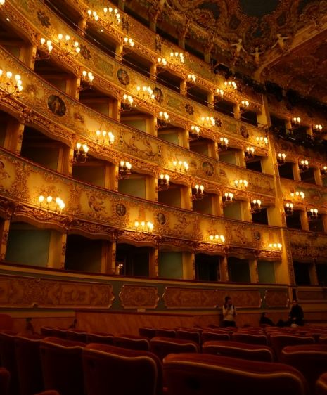I moodboardet kan man se hvilken stil vi har gået efter på hjemmesiden. GROB er kendt for niche forestillinger, og de kan godt lide at skille sig ud, så vi har valgt "individualitet" som overordnet tema.
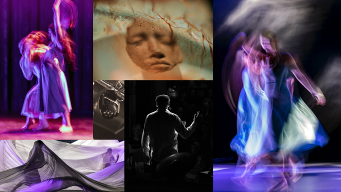Wireframet viser den overordnede struktur for hjemmesiden. Her kan man se hvordan vi gerne ville have landing side og portfolio siden skulle se ud. Vi har taget udgangspunkt i wireframet for at lave prototypen.
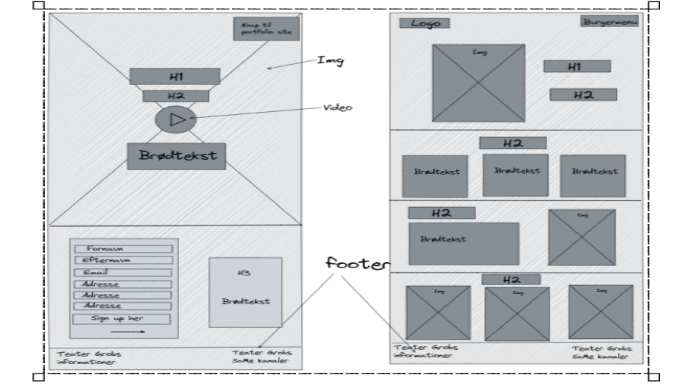På styletilet kan man se farveudvalget vi har haft som inspiration til vores website. Her kan man også de fonter vi har udvalgt og hvilket billedstil vi basere vores website på.

Det endelige produkt før kodningen
Prototypen er et produkt vi har lavet, som man bruger som udgangspunkt når man koder siden. Prototypen er et tæt match med det endelig produkt, som man kan bruge som værktøj for at teste brugervenligheden. Her kan man identificere problemerne inden man koder.
Let's inspire, together!
Billedet er vores PREVIZ moodboard. PREVIZ er en visuel skitse over "The tone of voice" i vores video. Her skal man tænke over farver, lys, billedkomposition, lyddesign og tempo. Moodboardet viser to forskellige piger der har fået den samme opgave, men løser den på deres egen måde. Den ene sidder intensivt og studerer, og den anden pige laver alt andet end at studere.
Man kan se deres to forskellige personligheder, og hvad der er vigtigst for dem. Man skulle ikke tro at disse to individer har noget til fælles, men budskabet/pay-off i videoen, er "We are different, but still the same." Teater GROB vil gerne samle forskellige mennesker på tværs af identitet og kultur, og det prøver vi at vise her.
Her er en kollektion af billeder af hele vores process
 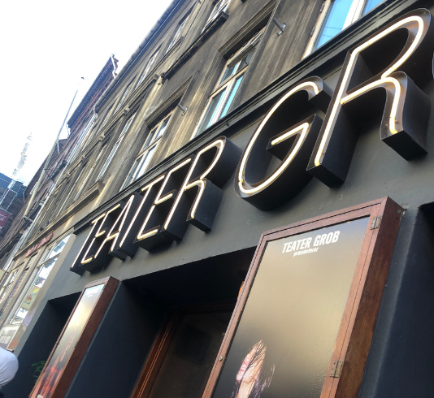
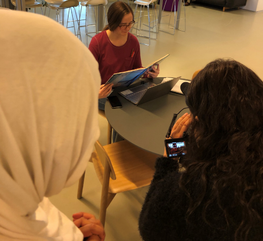
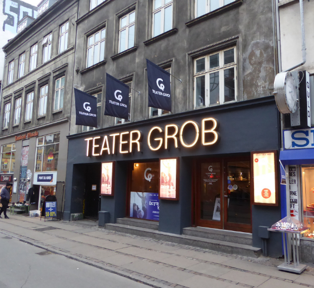
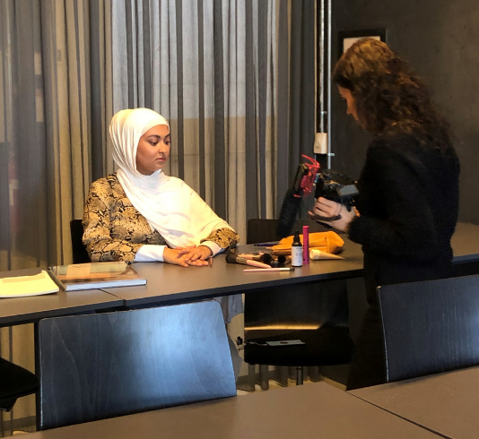
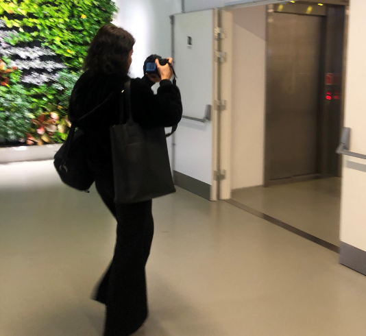
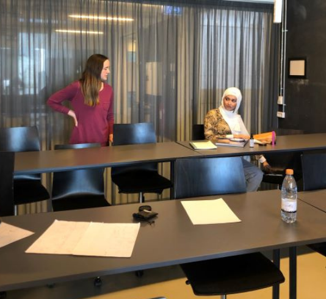
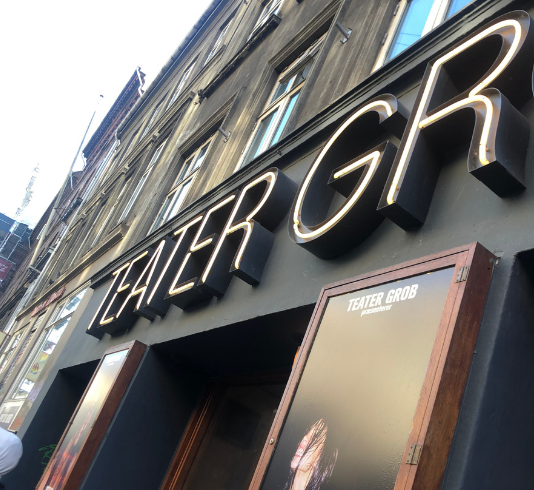
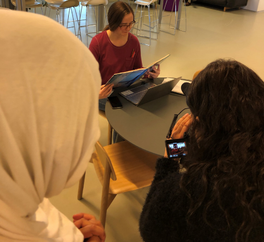
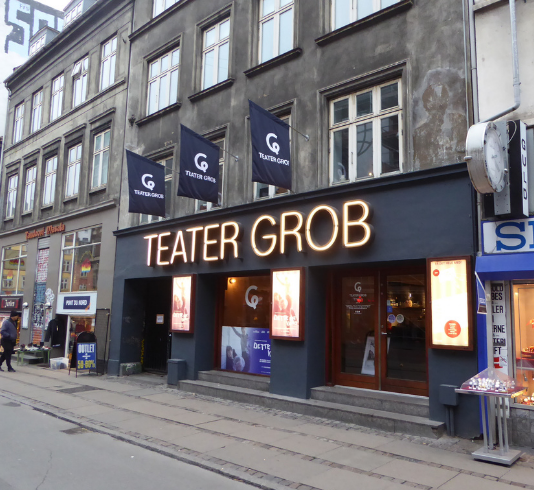
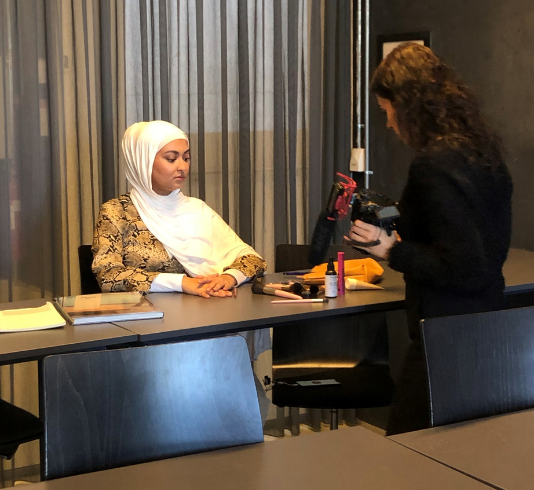
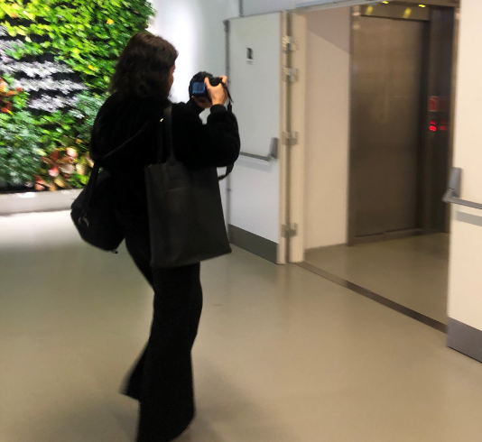
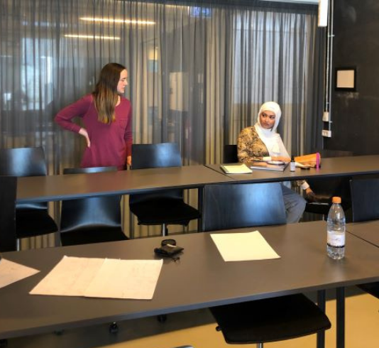